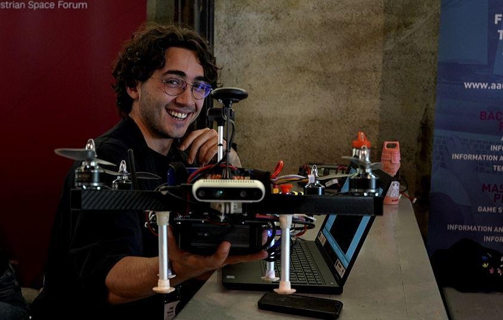
BSc in Electrical and Electronics Engineering. MSc in Information and Communications Engineering (Autonomous Systems & Robotics), University of Klagenfurt. I build perception and estimation systems for UAVs — from deep learning-based landing site detection to visual odometry and sensor fusion — and have field-tested them on the AMADEE-24 Mars analogue mission.
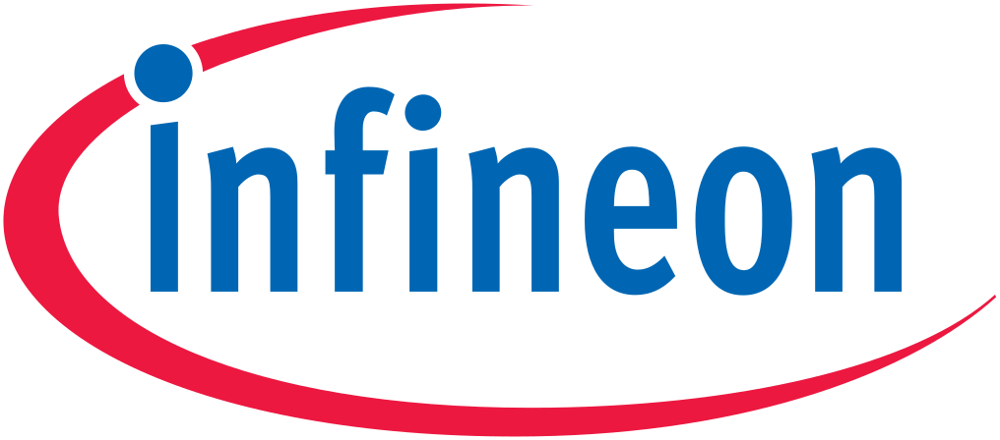
Automated Verification Flow Development — full-time internship
Refactored the mixed-signal verification flow into a more robust, generalized toolchain, adding automated report generation and direct regression execution. Delivered the team's first LLM-integrated data-parsing pipeline for industrial verification, with validation protocols that guarantee data integrity before downstream processing.
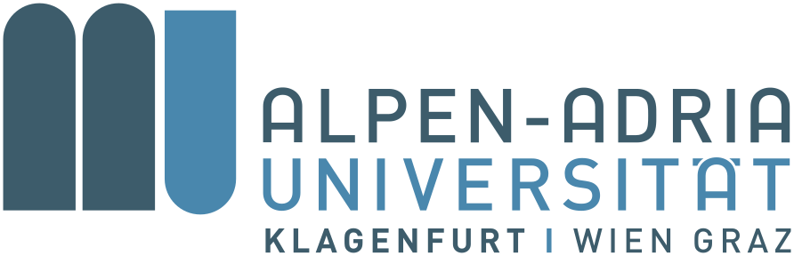
Research Student
Team leader of RAMSES in the Austrian Space Forum's AMADEE-24 analogue Mars mission. Developed AI-based autonomous landing-site detection for unknown environments and built the simulation scenarios used to generate training data for aerial computer-vision tasks.
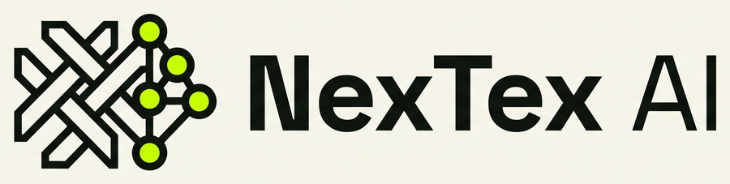
Co-founding an early-stage venture building an AI-powered quality-inspection platform for textile manufacturing, currently piloting with partners in Europe. Leading the technical architecture and product development.
Team leader of RAMSES (Rover Aerial Mars Support and Exploration System) within the Austrian Space Forum's AMADEE-24 Analogue Mars Mission. RAMSES uses a joint deep learning network (semantic segmentation + optical flow) to autonomously detect safe landing sites for Mars-like UAV operations, validated on real mission data in the field.
The MSc thesis is published on the Austrian Space Forum's (ÖWF) academic theses page.
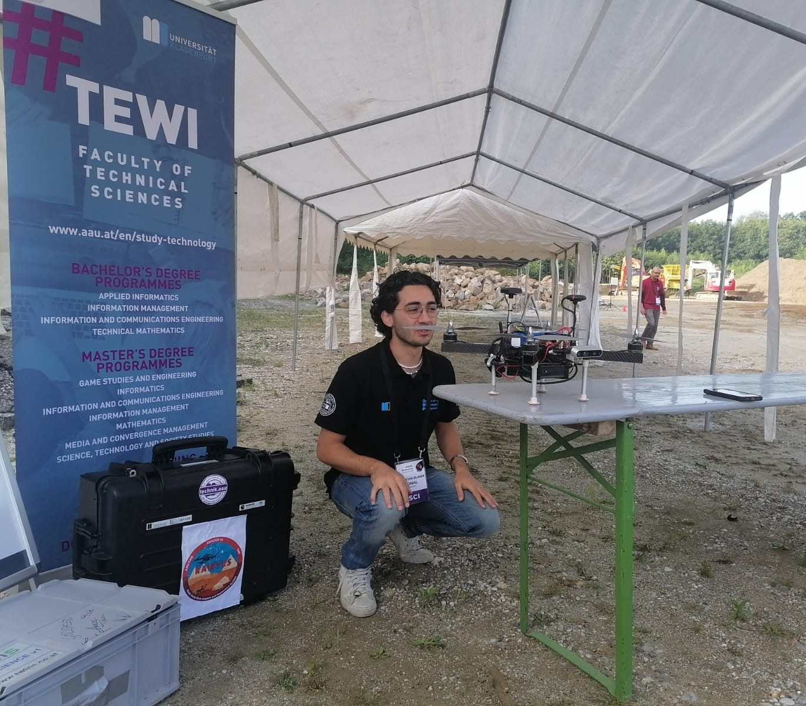
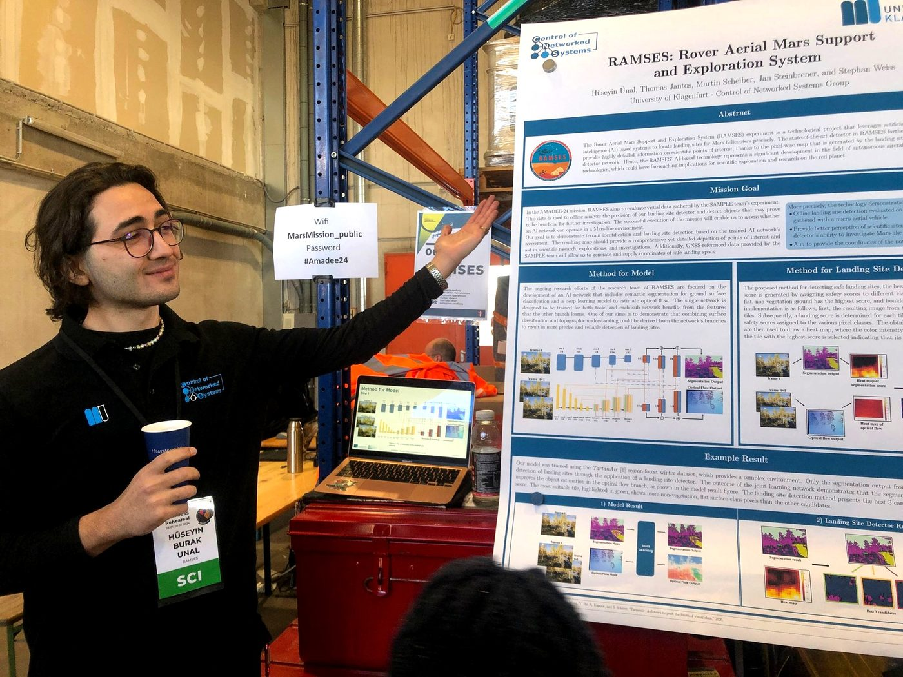
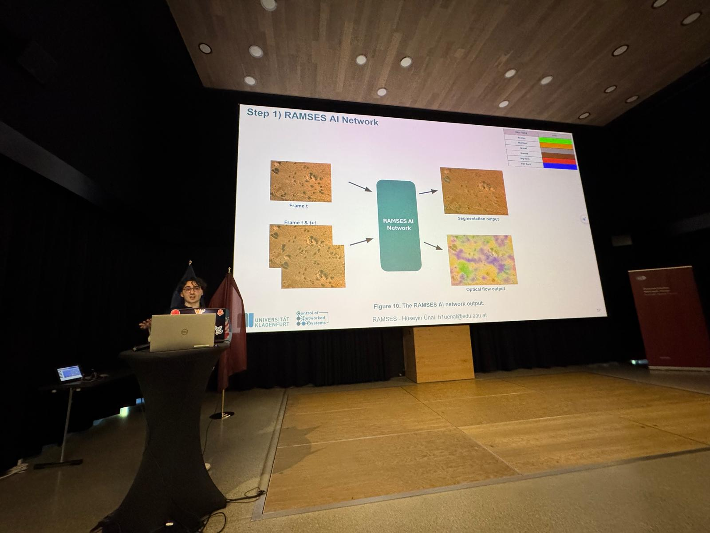
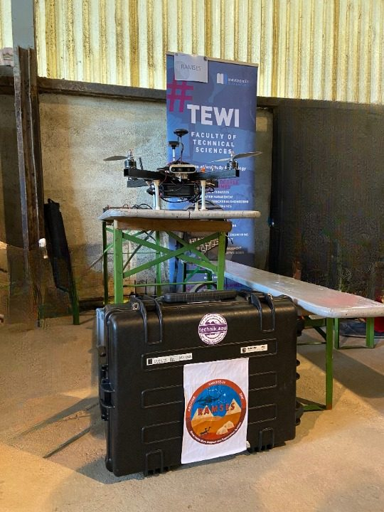
Real Mars-analogue imagery for training the RAMSES landing-site network is scarce, so I built a data generation pipeline in NVIDIA Isaac Sim: procedurally varied Mars-like terrains, a UAV camera flown along scripted nadir trajectories, and synchronized per-frame ground truth — RGB, semantic segmentation, depth, and optical flow.
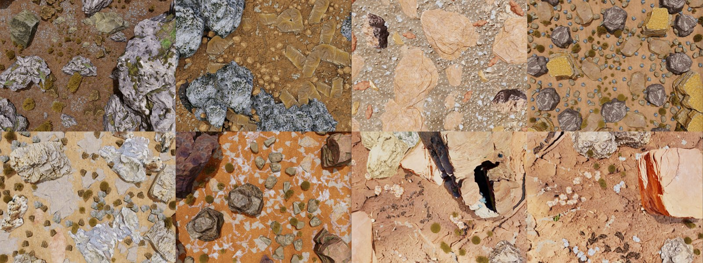
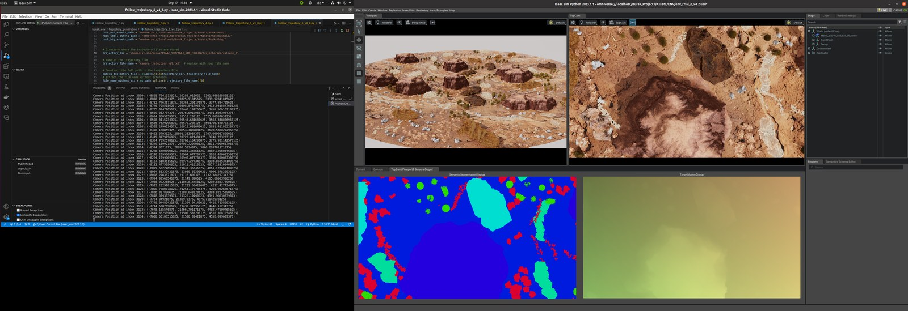
A few of the individual projects I've worked on beyond the thesis, spanning navigation, sensor fusion, and applied computer vision.
Building a multimodal AI/computer vision proof-of-concept for textile anomaly detection as part of an early-stage venture, currently pursuing funding. Leading technical architecture and development.
Custom MultiModal EKF fusing IMU, barometer, magnetometer, visual odometry, and LiDAR ICP for GPS-denied autonomous flight. Built on PX4 SITL + Gazebo Harmonic + ROS2.
View on GitHub →Autonomous drone + mobile ground robot pipeline for agricultural orchards: a PX4 drone surveys the field and builds RTAB-Map 2D/3D maps, row detection extracts the tree lines, and a Husky robot patrols them via Nav2. Built on ROS2 Humble + Gazebo Harmonic.
View on GitHub →A SemanticCostmapLayer plugin for Nav2 that converts vision-language model scene descriptions into local semantic hazard maps for robot planning.
View on GitHub →An automated diagnostic pipeline fusing DeepLabV3, Mask R-CNN, and YOLO, with SAM-based interactive segmentation, deployed via Flask and Docker.
View on GitHub →ROS2 implementation of the LSAM pipeline: nadir camera frames → semantic segmentation + optical flow → real-time accumulated safety costmap.
View on GitHub →Featured in "İzmir Ekonomililerle 5 Dakika", Izmir University of Economics' 5-minute alumni interview series.
Izmir University of Economics, 2019–2020 — a multi-sensor TurtleBot3 Burger built to navigate orchard environments autonomously, in collaboration with an industrial partner.
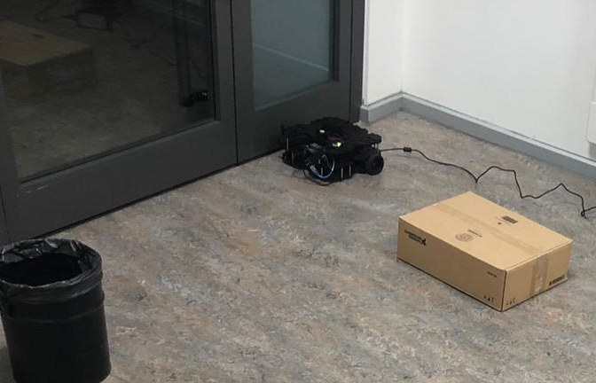
Monocular-camera object distance estimation (Python/LabVIEW), a Kalman filter fusing HC-SR04 ultrasonic readings for state estimation, and ROS SLAM-based autonomous navigation. On-device TFLite object detection on a Raspberry Pi was prototyped to bring AI perception to the robot, though the integration was not completed.